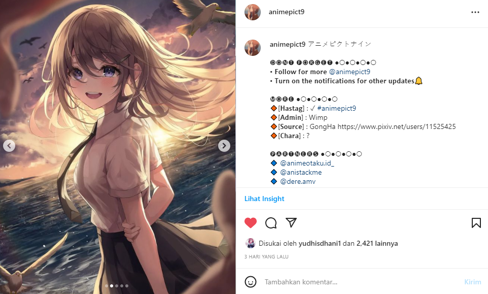

Izumiinlf
2nd Main Admin
Apasih Anistackme
Anistackme merupakan sebuah komunitas Fanpage Anime, yang dibuat sebelumnya dengan latar belakang untuk memberikan sajian wallpaper lucu, unik, dan menarik kepada para followers, viewers, dan juga client untuk digunakan oleh mereka.
Namun saat ini, Anistackme mulai beralih dari menyajikan Wallpaper menjadi memberikan edukasi kepada banyak orang mengenai Desain Grafis, Illustrasi, Trend Warna, Trend Desain, Typography, Font Pairing, Color Scheme, dan Masih Banyak lagi yang ditawarkan untuk para Client, dan itu menjadikan Client/Follower bisa dengan bebas mengekspresikan ide kreativitas nya masing-masing, selagi dibantu oleh Tim Anistackme.
Kenapa Jarang Upload?
kenapa? Banyak sih alasan yang bikin mimin gak bisa upload di Fanpage utama, selain karena kesibukan kerja, mimin juga developing web ini, jadi fokus mimin terbagi sangat banyak, itu yang menyebab kan mimin jarang sekali upload di Fanpage Anistackme. Namun, jika banyak yang meminta mimin untuk Upload, mimin akan selalu bergerak cepat memenuhi keinginan kalian. :D

Animepict9 Siapa Sih?
Animepict9 itu dulu merupakan Partner Eksklusive nya Anistackme dalam mencari bahan wallpaper anime untuk dijadikan contoh dan materi upload di Fanpage. Tapi semenjak Mimin Izumii fokus nya ke kerjaan nya, membuat konten setiap hari itu sudah hampir sangat sulit, sehingga mimin lebih memilih upload info dan wallpaper tentang Anime saja.
